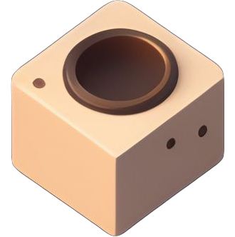

<div class="container">
  <div class="content-container">
    <div class="Head">
      <h1>Welcome to Inventorio</h1>
      <p>
        Welcome to Inventorio, the ultimate inventory management website for
        Factorio players! Our website is designed to make managing your in-game
        inventory a breeze. With Inventorio, you can easily add locations, store
        items inside those locations, add your desired items, and craft items,
        all with just a few clicks.
      </p>
    </div>

    <div class="info-container">
      <div class="Block-One">
        
        <h2>Map Page</h2>
        <p class="Para">
          Add your locations, visualize it on your map and keep track of all
          your bases!
        </p>
      </div>
      <div class="Block-One">
        
        <h2>Inventory Page</h2>
        <p class="Para">
          All inventory can be saved in certain locations, add any items that
          correlate with the game and keep track of your stock.
        </p>
      </div>
      <div class="Block-One">
        
        <h2>Crafting Page</h2>
        <p class="Para">
          Use your stock and craft Items that relate to your play-through or
          calculate what you may need in game for certain items.
        </p>
      </div>
    </div>
  </div>
</div>
